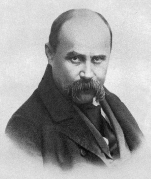

Народився 9 березня 1814 року у селі Моринці Звенигородського повіту Київської губернії в закріпаченій селянській родині. Дитячі роки проходять у селі Кирилівка (Керелівка). Восени 1822 року починає вчитися грамоти у місцевого дяка. Залишившись сиротою, іде наймитувати до дяка Богорського, який прибув з Києва. Не витерпівши знущань дяка, тікає від нього і шукає в навколишніх селах учителя-маляра. 1828 року взяли козачком (слугою) до панського двору у с. Вільшану. Упродовж майже 2,5 років — з осені 1828 року до початку 1831 р. — Шевченко пробув зі своїм паном у Вільні. Переїхавши 1831 року з Вільно до Петербурга, Енгельгардт взяв із собою Шевченка і віддав його в науку на 4 роки до живописця Василя Ширяєва. Улітку 1836 р. він познайомився зі своїм земляком — художником І. Сошенком, а через нього — з Євгеном Гребінкою, В. Григоровичем і О. Венеціановим. Навесні 1838 р. Карл Брюллов та Василь Жуковський викупили молодого поета з кріпацтва. Незабаром став студентом Академії мистецтв. Першу збірку своїх поетичних творів видав 1840 року під назвою «Кобзар». 25 травня 1843 року з Петербурга виїхав в Україну. В лютому 1844 року виїхав з України до Петербурга через Москву. У 1844 р. написав гостро політичну поему «Сон» («У всякого своя доля»), ставши на шлях безкомпромісної боротьби проти самодержавної системи тодішньої Російської Імперії. 5 квітня рада Академії мистецтв видала квиток на право проїзду на Україну. Вже в листопаді 1845 року збори Академії мистецтв у Петербурзі затвердили рішення ради про надання звання некласного художника. 31 березня (12 квітня) 1845 року виїхав із Петербурга через Москву до Києва. Навесні 1846 року прибув до Києва, оселився в будинку. У квітні пристав до Кирило-Мефодіївського братства. Заарештували 5 квітня 1847 р., відправили до Петербурга й ув’язнили в казематі. Заслали в солдати до Оренбурга. Деяке полегшення становища Шевченка настало навесні 1848 р. унаслідок включення його до складу Аральської експедиції. У квітні 1850 р. Шевченка вдруге заарештовано і, після піврічного ув’язнення, запроторено в Новопетровський береговий форт. Звільнено з заслання у 1857 р. Навесні 1858 поет прибув до Петербурга. Влітку 1859 року повернувся в Україну, якої вже 12 років не бачив. До останніх днів свого життя поет перебував під таємним поліційним наглядом. 10 березня 1861 року Шевченко помер.| Заголовок 2 | Заголовок 2 | ||||||||
|---|---|---|---|---|---|---|---|---|---|
| Ячейка | Заголовок 3 | ||||||||
|
Заголовок 4 | ||||||||